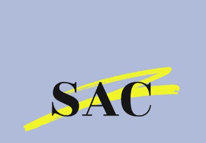

Thank you for your interest in applying to sit on the Student Advisory Council!
To be eligible for the council, you must be currently enrolled in one of the following:
-Community High School
-Pioneer High School
-The University of Michigan
-Washtenaw Community College
You must also be a resident of the Ann Arbor metro area for at least 8 months out of the year.
Responsibilities:
-Attend SAC meetings, which are about an hour long and have historically been held in the Michigan Union. Meetings are held biweekly via Zoom during the summer, though the option to attend remotely will be provided throughout the year.
-Arrive prepare and be well-read for the aforementioned meetings (estimated preparation time is 30 minutes).